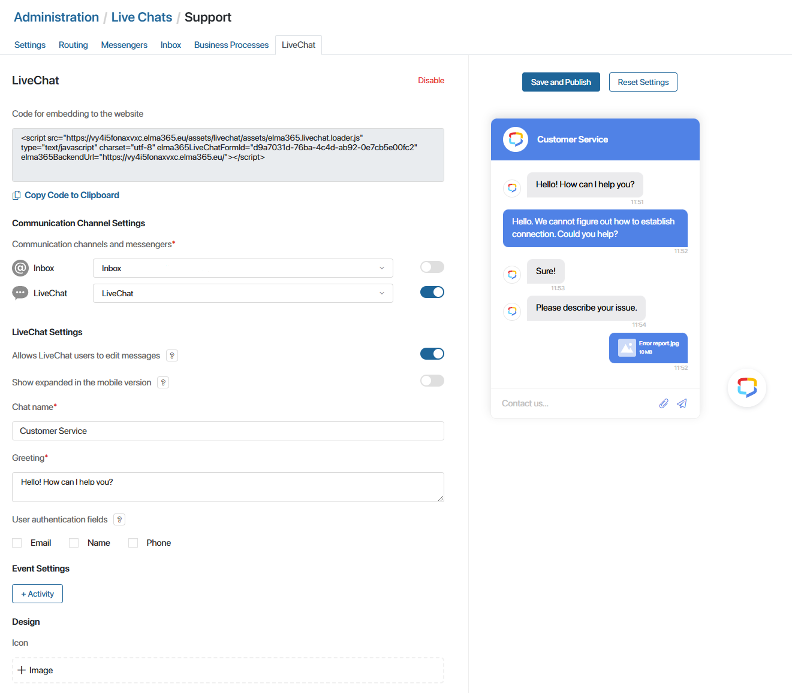
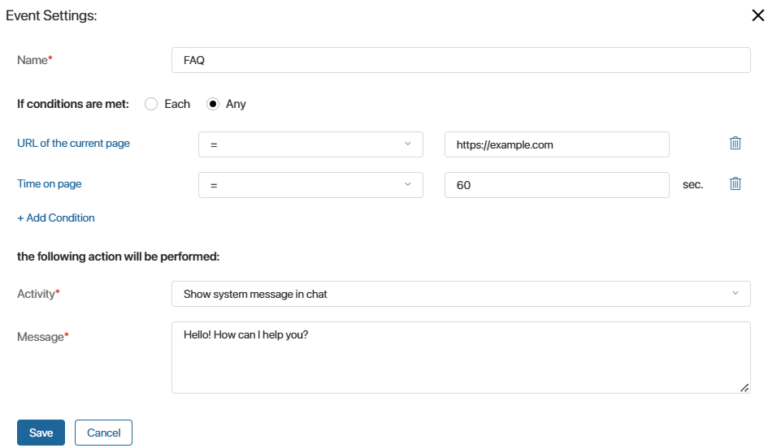
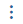
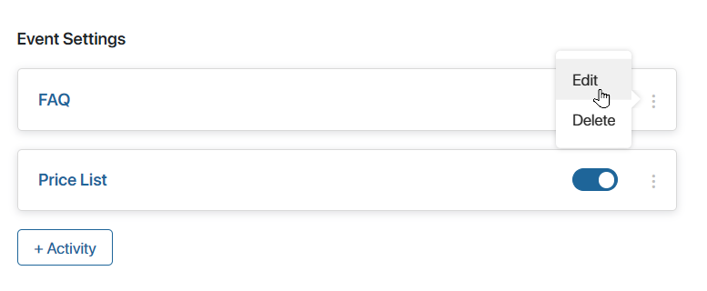

LiveChat is an online chat for communicating with customers. You can set up LiveChat in BRIX, connect it to a live chat, and then embed it on an external site. Then people who visit your website can write their messages in the online chat, and operators reply to them from the BRIX interface. The correspondence history will be saved in the Live Chats workspace, as well as in the LiveChat window of each client.
Moreover, if other communication channels are connected to the live chat, the user will be able to switch to them by clicking on the messenger or email icon in the online chat window. Thus, it is possible to choose where to communicate with the operator: on the website in the online chat window, in a messenger, or by email.
начало внимание
LiveChat configuration is only available to system administrators.
конец внимание
Configure a chat
A separate online chat is created for each live chat. To add one, do the following:
- Go to Administration > Live Chats.
- Select a live chat from the list or create a new one by clicking +Live Chat in the upper right corner.
- Switch to the LiveChat tab and click Enable in the center of the page.
In the left part of the page, the online chat’s settings can be changed, while on the right you can see a preview of the online LiveChat that automatically alters based on the parameters you set.

- Set the chat parameters:
- Communication Channel Settings. Toggle options on and off, selecting channels that customers will be able to use to send messages to the Live Chats workspace. You can choose any messenger or email inbox that is connected to the live chat and has the Active status.
The list of channels you select will be displayed when the user clicks the chat button on your website. Then the user can select the way they want to send their message:
- Messengers. The user is redirected to the web version of the messenger.
- Inbox. The user fills out the request form in the chat window on the website, and the operator’s response will be sent to their email.
- LiveChat. The user stays on the website and communicates with the operator in the chat window.
- LiveChat Settings. This section is shown if you toggled LiveChat on in the list of channels. Set parameters for the chat window:
- Allows LiveChat users to edit messages. This option allows customers to edit their messages sent in LiveChat. The time of editing will be displayed next to the message.
- Show expanded in the mobile version. When this option is enabled, the chat window on mobile devices is always displayed expanded. This is convenient, for example, if the website has a separate page for feedback.
Please note that if the option is enabled, the user will not be able to contact the live chat via messenger or email, even if these channels are configured. In the mobile version, only correspondence in the chat window will be available to them.
- Chat name*. Specify the title of the online chat window, for example, Tech Support.
- Greeting*. Enter the text that the user will see when they open the chat.
- User authentication fields. Along with the online chat, you can place an authentication window on the site. The user specifies personal data to sign up and start correspondence with the operator. The information will be displayed in the request on the created session page. To do this, check the fields that will be filled in by users: Email, Name, and Phone. Additional text settings and links to the policy of data processing are also available for the authentication window.
- Inbox Settings. This section is shown if you toggled Inbox on in the list of channels. Set parameters for the chat window:
- Greeting*. Enter the text that the user will see when they open the chat.
- Required fields*. Check the boxes next to the required fields that the user needs to fill out in the chat window in order to send a message. Your email and Message body are required by default. You can additionally select Full name and Subject. This data will be shown on the session page.
- Event Settings. Configure rules to automatically expand the chat window on the site. To do this, click the +Activity button. In the opened window, set the parameters.
- Design. Configure what the chat will look like:
- Icon. Upload an image that will be displayed on the button for opening the chat.
- Theme. Select the main color of the chat.
- Button size. Set the size of the button that opens the chat.
- Position. Configure the position of the button that opens the chat:
- Button position. Specify in which corner of the screen the button will be located.
- Right indentation, Left indentation, Bottom indentation, Top indentation. Depending on the selected button position, set indents for the button from the screen edges, e.g. from the right and bottom. Indents are set separately for PC and mobile devices. The minimum value is 0 pixels, while the maximum value is 1000 pixels.
- Chat background. Select a background image for the chat.
- Link to the personal data processing policy*. If you have added an authentication window to the online chat, the user specifies contact data and gives consent to their processing. To do this, the user checks a special field. By default, the field name contains a hyperlink that opens a page on the website with information about the data collection policy. You can specify the URL of this page.
- Use custom text for personal data processing consent. Enable this option and change the text of the special field in the authentication window, which the user needs to check to send the request.
- To finish configuring the chat, click the Save and Publish button in the upper right corner of the page.
If needed, you can revert the chat’s configuration to default. To do that, click the Reset Settings button.
- Copy the generated code for embedding the chat in a website by clicking Copy Code to Clipboard in the upper part of the page.
- Embed the online LiveChat on your website or portal.
Now users who visit your website can use the chat to contact you.
After that, your clients will be able to use LiveChat to send messages.
If an authorized user accesses LiveChat for the first time, a new session is created in the Live Chats workspace. For all subsequent requests from this user, the session will be renewed. Each time an unauthorized user accesses the live chats, a new session will be created. Messages received will be processed by the operator.
When creating a new session with a user who contacted the company via LiveChat, UTM tags are automatically captured in BRIX. For more details on how to work with them, see UTM tags in LiveChat.
Automatically open the LiveChat window
When configuring LiveChat, you can set rules that will automatically open the chat window on the site. For example, a user will see a chat window that displays a greeting if they spend more than two minutes on the site page.
To customize the auto-opening rules:
- Go to Administration > Live Chats. Select the desired live chat and open the LiveChat tab.
- In the Event Settings section, click +Activity.
- In the opened window, fill in the fields:

- Name*. Enter the name of the event.
- If conditions are met. Specify how many conditions must be met for the chat to automatically open:
- Each. It is necessary that all configured conditions are triggered.
- Any. A single met condition is enough to fulfill the rule.
Create the conditions upon which the chat will open. To do this, click Select Attribute. From the list that opens, select the value that will be checked by the rule:
- URL of the current page. Select where the chat window will be opened. To make the chat window appear only on a specific page, select the equal sign and enter the full URL. Specify the Contains and part of address option to open the chat window on all pages with matching URLs.
- Time on page. Specify the time in seconds spent by the user on a certain page after which the online chat will open.
- Time on site. Specify the time in seconds spent by the user on all pages of the site, after which the chat will be automatically opened.
- Activity*. Select the activity that will take place if the rule is triggered:
- Open email sending form. In the form opened on the site, the client will be able to send a request to the live chat and specify the email to receive a response. An email inbox has to be connected to the live chat for this activity.
Please note that if the Show expanded in the mobile version option is enabled, writing to the live chat via email is not available on mobile devices.
- Show system message in chat. A window will open on the page with the text set in the Message field. The user will be able to send a request to the live chat and receive a reply in the chat window.
- Message*. Enter the text that the user will see in the chat window. The field is displayed when the Show system message in chat action is selected.
- Save the configured rule.
The list of created rules is displayed on the LiveChat tab in the Event Settings section. Use the radio button to the right of a rule’s name to turn it on and off.
To edit or delete a rule, click on the  icon and select an action.

- To finish the settings, click Save and Publish at the top of the tab.